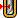

|
Величина между фактическим радиусом детали и фактическим радиусом инструмента. |
|  | Чрезмерная толщина |
Дополнительная толщина, которая применяется для инструмента, чтобы обнаружить проходы.
|
Величина между фактическим радиусом детали и фактическим радиусом инструмента. |